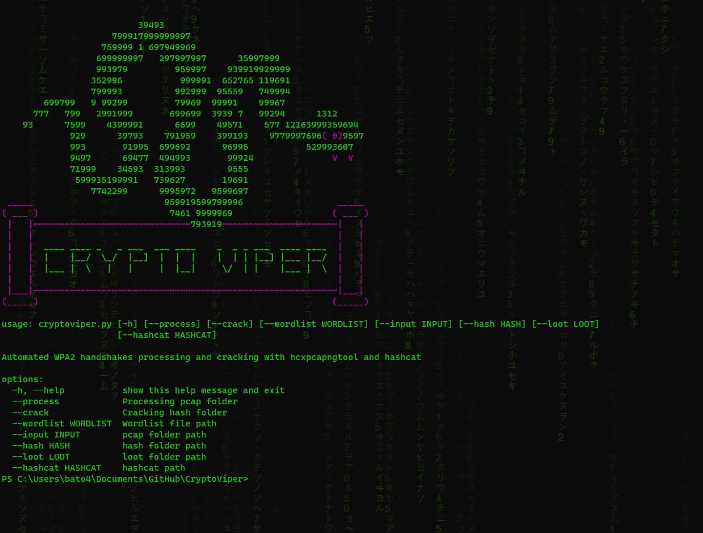
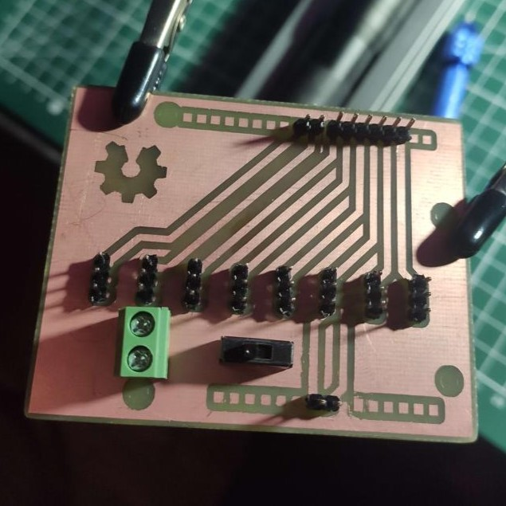
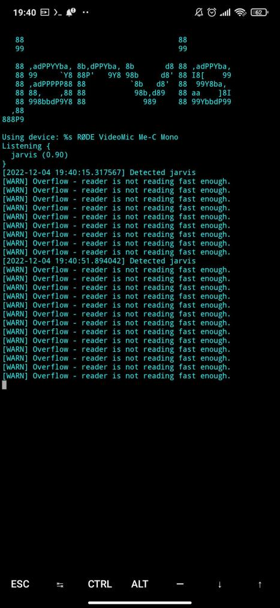
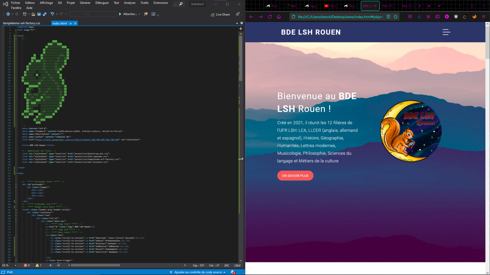
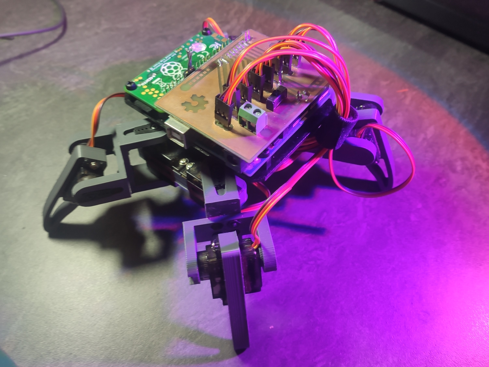

synapsView.py 🧠
Réalisation d'une mini librairie python utilisant Matplotlib pour la visualisation de modèles de réseaux de neurones (sklearn).

CryptoViper.py 🐍
Script python permettant l'automatisation du traitement de fichiers pcap pour tester la sécurité des réseaux WPA2
electric-staff⚡
Générateur électrostatique intégré dans un tube d'acrylique. Il est basé sur le fonctionnement du générateur de Van de Graaff qui a été utilisé pour alimenter les premiers accélérateurs de particules. Il peut délivrer une différence de potentiel d'environ 50.000 V (vidéo) entre la sphère et le sol grâce à l'effet triboélectrique (électricité statique).
J'ai modélisé les pièces sur Fusion360 puis je les ai imprimées en PLA sur ma fidèle Ender3. Pour l'électronique, j'ai utilisé un Arduino Nano, des LEDs Neopixels et un ESC de 30A bas de gamme pour contrôler le moteur brushless. Le moteur en tournant va entraîner le mécanisme qui va générer la charge électrostatique grâce au frottement entre la courroie élastique et les poulies en nylon et en téflon.
(Ça ne sert à rien... c'est juste cool d'avoir un bâton magique qui peut lancer des éclairs XD)

BrainPCB ⚡
Petit shield Arduino permettant de contrôler 8 servos moteurs conçus sur EasyEDA et fabriqués maison grâce à ma découpeuse laser et une gravure chimique à l'acide (HCl).
Jarvis.py 🎤
Assistant vocal fonctionnant en local sur une raspberry pi 3 grâce à la librairie python Picovoice.
Site web BDE 🐿️
Site web developpé pour l'association du bureau des éleves de LSH de l'université de Rouen.
https://bdelshrouen.github.io/ SpiderBot 🕷️
Projet de robotique utilisant une IA de reconnaissance vocale pour contrôler un robot quadripède imprimé en 3D (modèle trouvé sur Thingiverse), à l'aide d'une raspberry pi 0W et de la librairie python Picovoice.
Sandevistan 🤖
Prothèse cybernétique dorsale de mon costume d'hallowen inspiré de l'univers de Cyberpunk 2077. Projet mêlant impression 3D, arduino et LEDs RGB néopixels.